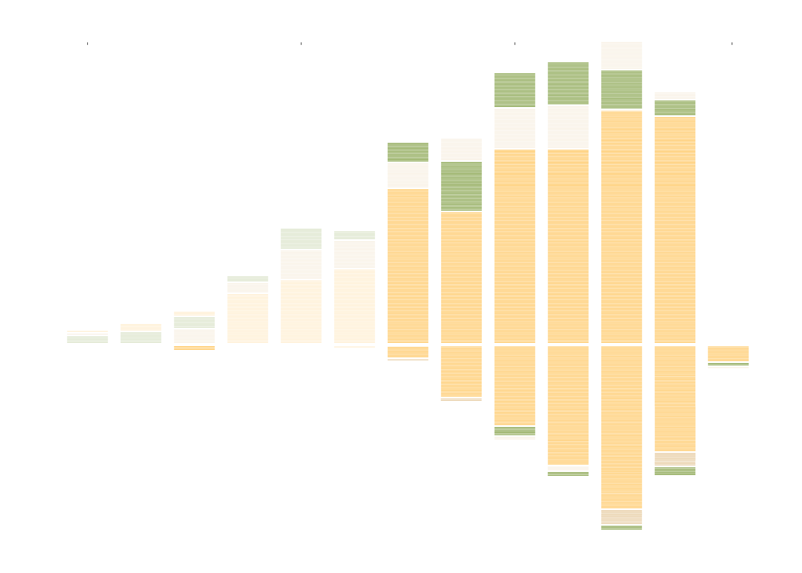

United States, China and other countries filing for CRISPR patents
Scientists around the world are racing to develop and patent new varieties of food crops using CRISPR.
The CRISPR method was invented in 2012 and allows DNA to be edited without foreign genes.
It has revolutionized genetic engineering in agriculture, medicine, and beyond.
Many patents have been filed by China, the U.S., and other countries.
Applications began appearing shortly after CRISPR was invented.
Dow Agrosciences filed one of the earliest CRISPR crop patents.
The United States quickly became a leader in gene-edited crop applications.
But China surged ahead in total filings within a few years.
Now China files over five times more CRISPR crop patents than the U.S.

 United States, China and other countries filing for CRISPR patents
United States, China and other countries filing for CRISPR patents